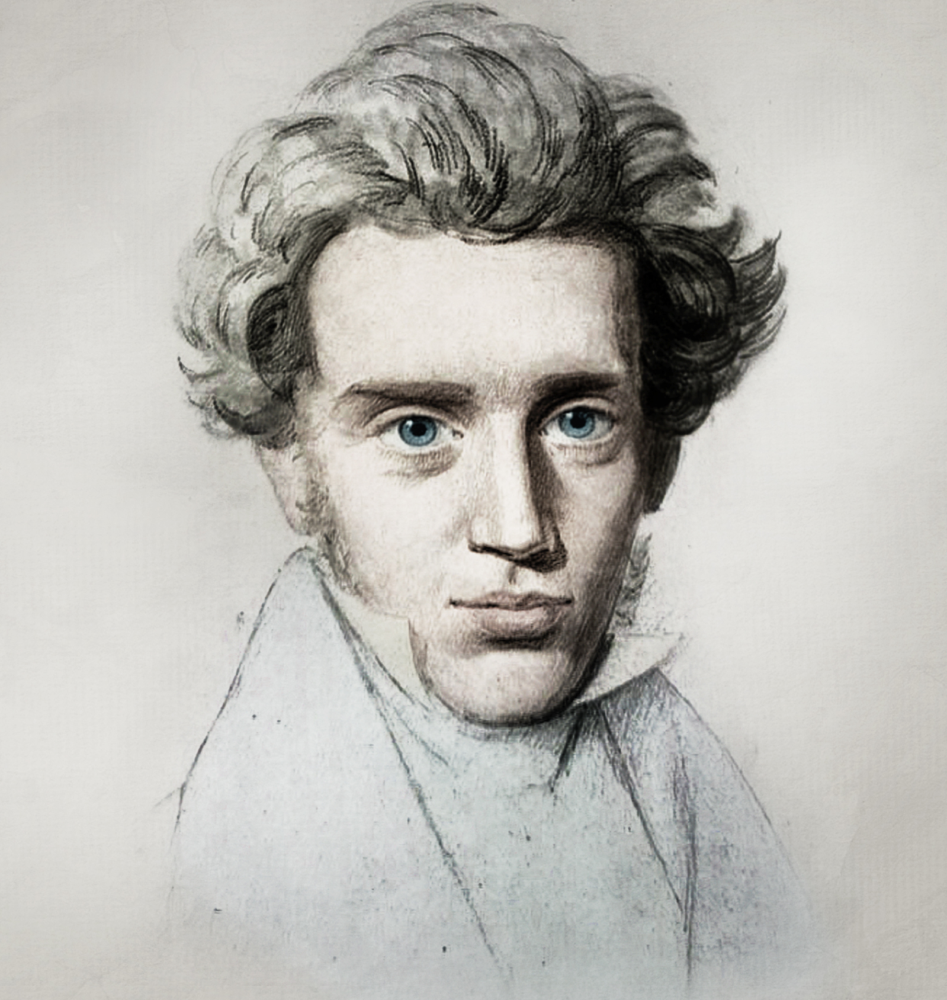

Nietzsche was a German philosopher who rejected traditional values and beliefs,
and emphasized the importance of the individual's will to power.
| Born |
Died |
| Friedrich Wilhelm Nietzsche, 15 October 1844 |
25 August 1900 (aged 55) |
He is famous for his statement that "existence precedes essence,"
meaning that individuals must create their own meaning and purpose
in life, rather than seeking it in pre-existing ideas or beliefs.
| Born |
Died |
| Jean-Paul Charles Aymard Sartre, 21 June 1905 |
15 April 1980 (aged 74) |

Kierkegaard was a Danish philosopher who is considered to be the father of existentialism.
He wrote extensively about the individual's search for meaning in a world that often seems meaningless.
| Born |
Died |
| Søren Aabye Kierkegaard, 5 May 1813 |
11 November 1855 (aged 42) |